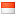
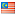
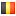
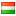
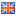
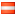
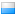
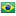
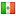
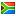

Formula 1
 2011 Canadá: Vencedor: Jenson Button
2011 Canadá: Vencedor: Jenson Button- 2011 Mônaco: Vencedor: Sebastian Vettel
- 2003 Mônaco: Vencedor: Juan Pablo Montoya
- 2002 Malásia: Vencedor: Ralf Schumacher
 2002 Austrália: Vencedor: Michael Schumacher
2002 Austrália: Vencedor: Michael Schumacher- 2001 Bélgica: Vencedor: Michael Schumacher
- 2001 Hungriaa: Vencedor: Michael Schumacher
 2001 Alemanha: Vencedor: Ralf Schumacher
2001 Alemanha: Vencedor: Ralf Schumacher- 2001 Grã Bretanha: Vencedor: Mika Hakkinen
 2001 França: Vencedor: Michael Schumacher
2001 França: Vencedor: Michael Schumacher- 2001 Europa: Vencedor: Michael Schumacher
- 2001 Canadá: Vencedor: Ralf Schumacher
- 2001 Mônaco: Vencedor: Michael Schumacher
- 2001 Áustria: Vencedor: David Coulthad
 2001 Espanha: Vencedor: Michael Schumacher
2001 Espanha: Vencedor: Michael Schumacher- 2001 San Marino: Vencedor: Ralf Schumacher
- 2001 Austrália: Vencedor: Michael Schumacher
- 2000 Canadá: Vencedor: Michael Schumacher
- 1999 San Marino: Vencedor: Michael Schumacher
- 1998 Bélgica: Vencedor: Damon Hill
- 1997 Austrália: Vencedor: David Coulthard
- 1996 Canadá: Vencedor: Damon Hill
- 1995 Australia: Vencedor: Damon Hill
 1995 Japão: Vencedor: Michael Schumacher
1995 Japão: Vencedor: Michael Schumacher 1995 Itália: Vencedor: Johnny Herbert
1995 Itália: Vencedor: Johnny Herbert- 1995 Bélgica: Vencedor: Michael Schumacher
- 1995 Hungria: Vencedor: Damon Hill
- 1995 San Marino: Vencedor: Damon Hill
- 1995 Brasil: Vencedor: Michael Schumacher
- 1994 Canadá: Vencedor: Michael Schumacher
- 1994 Espanha: Vencedor: Michael Schumacher
- 1994 Mônaco: Vencedor: Michael Schumacher
- 1994 San Marino: Vencedor: Michael Schumacher
- 1994 Pacífico: Vencedor: Michael Schumacher
- 1994 Brasil: Vencedor: Michael Schumacher
- 1993 Australia: Vencedor: Ayrton Senna
- 1993 Alemanha: Vencedor: Alain Prost
- 1992 Itália: Vencedor: Ayrton Senna
- 1992 Hungria: Vencedor: Ayrton Senna
- 1992 Canadá: Vencedor: Gerhard Berger
 1991 Portugal: Vencedor: Riccardo Patrese
1991 Portugal: Vencedor: Riccardo Patrese- 1991 Hungria: Vencedor: Ayrton Senna
- 1991 Alemanha: Vencedor: Nigel Mansell
- 1991 San Marino: Vencedor: Ayrton Senna
 1991 Estados Unidos: Vencedor: Ayrton Senna
1991 Estados Unidos: Vencedor: Ayrton Senna- 1990 Análise desportiva
- 1990 México: Vencedor: Alain Prost
- 1990 Brasil: Vencedor: Alain Prost
- 1990 Estados Unidos: Vencedor: Ayrton Senna
- 1989 Austrália - O caso Senna
- 1989 Australia - Vencedor: Thierry Boutsen
- 1989 Japão - Vencedor: Alessandro Nanini
- 1989 Itália - Vencedor: Alain Prost
- 1989 Canadá - Vencedor: Thierry Boutsen
- 1989 San Marino - Vencedor: Ayrton Senna
- 1983 Alemanha - Vencedor: Alain Prost
- 1981 San Marino - Vencedor: Nelson Piquet
- 1981 Bélgica - Vencedor: Carlos Reutemann
- 1979 África do Sul - Vencedor: Gilles Villeneuve
CART / INDYCAR
- 2002 Surfes Paradise - Vencedor: Mario Dominguez
- 2001 Lauzits - Vencedor: Kenny Brack
- 2001 Toronto - Vencedor: Michael Andretti
- 2001 Nazareth - Vencedor: Scott Dixon
- 1999 Homestead - Vencedor: Greg Moore
- 1995 Detroit - Vencedor: Robby Gordon
- 1988 CART IndyCar World Series